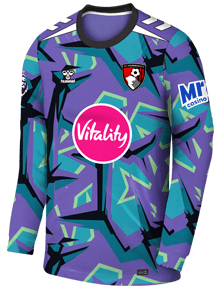
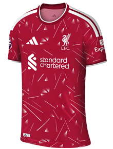
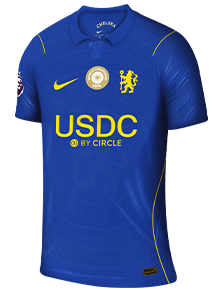
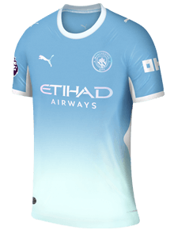
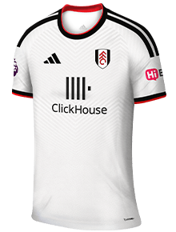
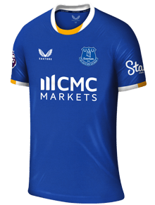
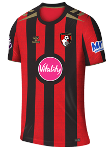
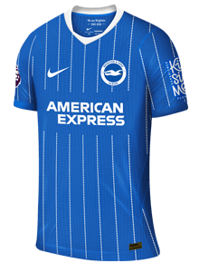
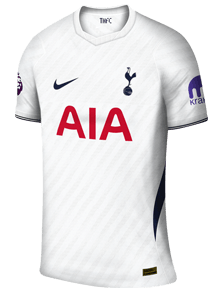

The Raccoons
4th RaccoonsGameweek 10
| Pos | Player | Inf | Opp | xMins | GW |
|---|---|---|---|---|---|
| GK |  Đorđe Petrović Đorđe Petrović | IPS (a) | 81 | — | |
| DEF |  Milos Kerkez Milos Kerkez | CRY (a) | 83 | — | |
| DEF |  Levi Colwill Levi Colwill | SUN (a) | 87 | — | |
| DEF |  Matheus N. Matheus N. | NFO (a) | 87 | 2 | |
| MID |  Josh King Josh King | Groin | NEW (h) | 73 | 3 |
| MID |  Kiernan Dewsbury-Hall Kiernan Dewsbury-Hall | COV (h) | 87 | 7 | |
| MID | James Garner | COV (h) | 87 | 3 | |
| MID | Cole Palmer | SUN (a) | 86 | — | |
| FWD | Thierno Barry | COV (h) | 79 | 13 | |
| FWD | Erling Haaland | NFO (a) | 85 | 2 | |
| FWD | Gonzalo | NEW (h) | 77 | 2 | |
| Bench | |||||
| MID | 1Alex Scott | Thigh | IPS (a) | 0 | — |
| MID | 2 Jack Hinshelwood Jack Hinshelwood | BRE (h) | 52 | — | |
| DEF | 3 Pedro Porro Pedro Porro | LEE (a) | 35 | 6 | |
xMins as of Fri 6 Nov
Gameweek 1032 pts

PetrovićIPS (a)
KerkezCRY (a)
ColwillSUN (a)▲45′

Matheus N.2▼72′

King3
Dewsbury-Hall7Garner3
PalmerSUN (a)
Barry13
Haaland2
▼65′Gonzalo2
Bench

ScottIPS (a)
HinshelwoodBRE (h)
Porro6